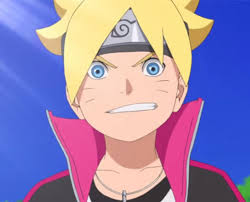
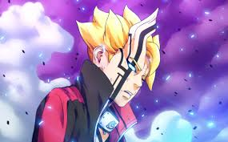

Boruto: Naruto Next Generations (BORUTO????? ?NARUTO NEXT GENERATIONS?, Boruto: Naruto Nekusuto Jenerêshonzu) est un manga écrit par Ukyô Kodachi et dessiné par Mikio Ikemoto, sous la supervision de Masashi Kishimoto, l'auteur du manga Naruto. Il est prépublié depuis le 9 mai 2016 dans le magazine Weekly Shônen Jump et publié en volumes reliés par Shûeisha depuis août 2016. La version française est publiée par Kana depuis mars 2017. Une adaptation en anime est diffusée depuis le 5 avril 2017,[1] sur TV Tokyo au Japon et en diffusion simultanée une heure après la diffusion japonaise sur Anime Digital Network dans les pays francophones.
Bonne visite

